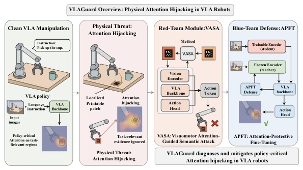
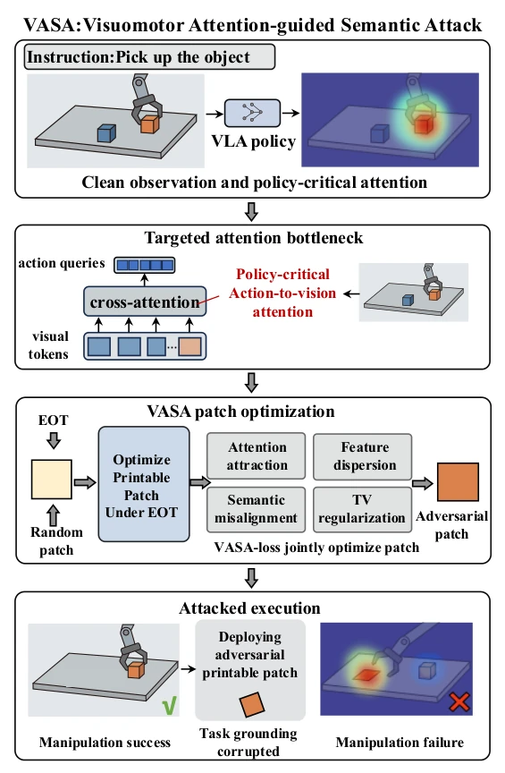
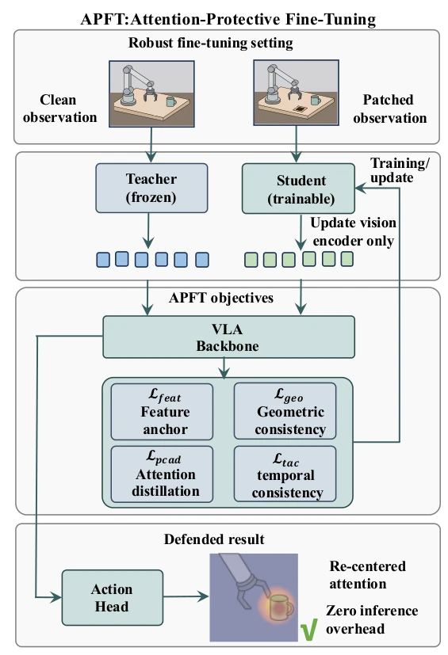
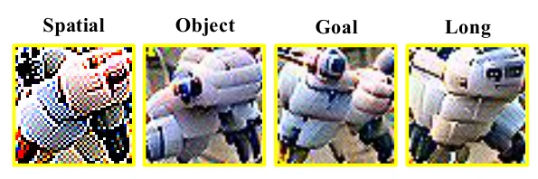
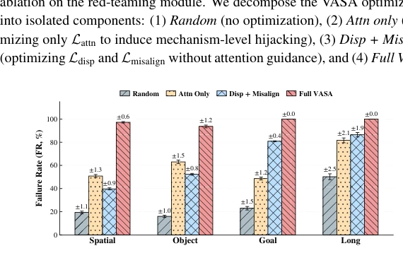
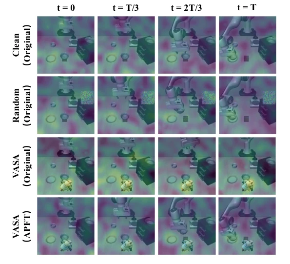
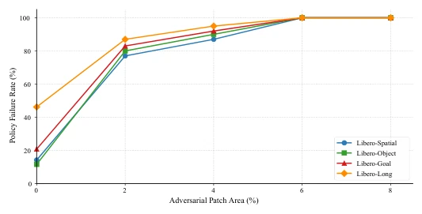
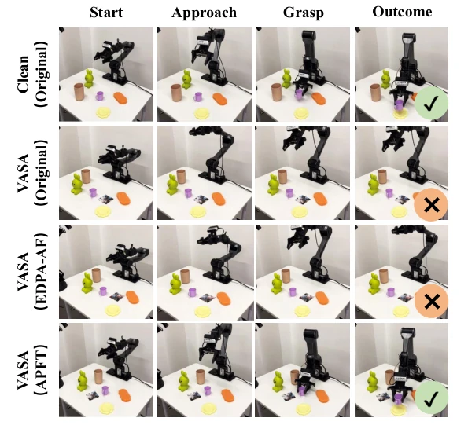

This paper equips VLA robots with an 'anti-hijacking helmet'. The authors keenly point out that existing defenses focus too much on global features, ignoring the fatal flaw that attention is 'sucked away' by physical patches during action generation. The VASA attack is indeed severe, driving the failure rate to 100%, but this also exposes the 'glass heart' of VLA models in the physical world. The APFT defense is quite smart, only tuning the visual encoder, adding no latency during inference, which is very practical in edge computing scenarios. However, the WSN background seems a bit like chasing hot topics, after all the core is still single-robot confrontation. Overall, defense and attack at the mechanism level are more valuable than black-box testing, but stability under long-term tasks still needs observation. Additionally, the large-scale validation on real robots (2000 trials) increases credibility, but generalization ability for complex dynamic environments still needs further testing.
Deploying VLA models in the physical world faces severe challenges, especially when acting as nodes in a Wireless Sensor Network (WSN) [37]. Existing defenses mostly focus on global feature alignment or test-time purification [29, 32, 38], but ignore the sparse critical visual evidence relied upon for action generation. For example, although EDPA [32] reduces global differences through adversarial fine-tuning, it cannot guarantee local spatial localization. Physical patch attacks (such as EOT optimization) can easily mislead attention [2, 5], leading to kinematic deviations. Existing methods either introduce unacceptable latency or fail to protect strategy-critical paths. Therefore, a mechanism-level framework is needed to directly protect the attention routing from vision to action, rather than merely repairing semantic representations. In the closed-loop perception-action cycle, local perception errors immediately trigger erroneous actions and accumulate [8, 19, 20], making protecting attention pathways more critical than protecting global features.

FIGURE 1 Overview of VLAGuard. A clean VLA policy grounds policy-critical attention on task-relevant regions for successful manipulation, whereas a localized printable patch can hijack action-to-vision attention and induce failure. VLAGuard addresses this threat with a red-team module, VASA, for mechanism-aware physical stress testing, and a blue-team module, APFT, for restoring task-relevant grounding and stabilizing the temporal evolution of policy-critical attention with zero additional inference overhead.
VLAGuard includes red-blue adversarial confrontation. The Red Team VASA module generates EOT-optimized printable patches, with objective functions including attention guidance (Lattn), feature dispersion (Ldisp), and semantic misalignment (Lmisalign), forcing action queries to focus on patches rather than task regions. The Blue Team APFT adopts a teacher-student architecture, fine-tuning only the student visual encoder. Loss functions include feature anchoring (Lfeat) to maintain semantic consistency, strategy-critical attention distillation (Lpcad) to restore teacher attention distribution, language-guided geometric consistency (Lgeo) to protect local structures, and temporal attention consistency (Ltac) to suppress attention sticking. There is no extra overhead during inference, directly reusing the original model's forward path. Specifically, VASA is optimized under the EOT distribution to ensure patches remain effective under viewpoint and lighting variations [2]. APFT distills the attention distribution of action queries, forcing the student model to mimic the teacher model's clean attention under attacked inputs, while utilizing temporal consistency loss to prevent attention from 'sticking' on patches, thereby maintaining robustness in long-horizon tasks.

FIGURE 2 Pipeline of VASA. Starting from a clean observation, VASA inserts a localized printable patch and optimizes it under Expectation-over-Transformation (EOT). The attack explicitly targets the action-to-vision bottleneck by minimizing a composite objective that drives policy-critical attention toward the patch, while simultaneously maximizing feature dispersion and vision-language misalignment and enforcing physical smoothness for printability. The optimized patch redirects action-conditioned attention away from task-relevant evidence and causes manipulation failure. 10

FIGURE 3 Pipeline of APFT. APFT adopts a teacher-student robust fine-tuning framework in which the frozen Teacher processes clean visual inputs and the trainable Student processes adversarially patched visual inputs. Robustness is injected by updating only the Student visual encoder with feature anchoring, policy-critical attention distillation, language-guided geometric consistency, and temporal attention consistency, yielding a defended VLA policy with restored spatial-temporal grounding and zero additional inference overhead.
Validated on LIBERO simulation and PiPER physical platform. Simulation uses OpenVLA and π0, metric is Failure Rate (FR). Physical experiment 2000 trials, metric is Success Rate (SR). Baselines include Random Patch, UADA, UPA, EDPA. Results show that VASA attack raises OpenVLA failure rate to 100%. APFT reduces average FR under VASA from 100% to 25.9% (Sim), physical success rate from 23.0% to 67.4%. Ablation experiments show that attention distillation (Lpcad) and temporal consistency (Ltac) are most critical. EDPA-AF performs poorly under adaptive attack (FR 96.6%), proving global alignment is insufficient. Physical experiments cover grasping, opening drawers, pouring liquids, etc., and consider lighting and viewpoint randomization. Results indicate that APFT significantly improves robustness against physical patches while maintaining clean task performance, validating the effectiveness of the attention protection mechanism.

FIGURE 4 Visualization of the EOT-optimized VASA patches generated for the OpenVLA model across the four LIBERO benchmark suites (Spatial, Object, Goal, and Long). Each displayed patch is optimized separately for its corresponding suite, rather than being a visualization of a single shared patch. Driven by the attention-guidance and feature-dispersion objectives, the optimization process yields distinct, uninterpretable semantic patterns that act as strong attention attractors to disrupt the policy-critical action-to-vision cross-attention.

FIGURE 5 Ablation study of the VASA attack objectives on OpenVLA across four LIBERO suites. Solely targeting the attention bottleneck (Attn only) significantly outperforms traditional semantic-level attacks (Disp + Misalign), validating that mechanism-level attention hijacking is the primary driver of physical policy collapse. Error bars represent the standard error (SE) across independent evaluations.

FIGURE 6 Temporal evolution of policy-critical action-to-vision attention in LIBERO. Under clean and random-patch conditions, the original policy maintains attention on task-relevant regions. Under VASA, attention collapses onto the adversarial patch and persists over time, whereas APFT suppresses patch fixation and restores task-relevant grounding during closed-loop execution.

FIGURE 7 Impact of physical patch size on policy failure in LIBERO. As the patch area increases, the failure rate rises sharply across all four LIBERO suites, revealing a clear physical operating boundary for attention hijacking. The policy begins to degrade substantially at small patch ratios and collapses completely when the patch occupies about 5% of the visual field, showing that severe failure does not require large-scale occlusion.

FIGURE 8 Representative real-world manipulation rollouts on the PiPER tabletop manipulator under clean and physical VASA attack conditions. From left to right, columns show the task progression from Start to Approach, Grasp, and Outcome. From top to bottom, rows correspond to Clean with Original policy, VASA (Original),VASA (EDPA-AF), and VASA (APFT). The original policy succeeds under clean conditions but fails under the printed physical VASA patch due to corrupted task-relevant grounding. EDPA-AF provides only limited recovery, whereas APFT restores successful execution under the same attack, demonstrating improved real-world robustness against attention hijacking.